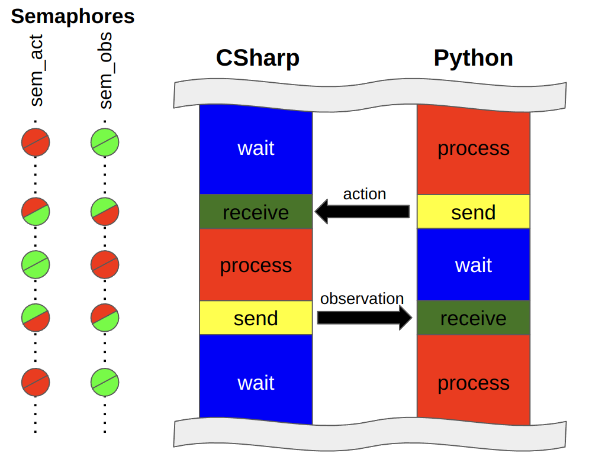

Basic tutorial
Figure1: Synchronization diagram between python script and the environment.
Synchronization in Python
Figure 1 shows the pattern of interaction between Python and Ultima Online client(C#) processes. First, python script samples an action from the model, meanwhile the C# process waits for the action to be passed. In this case ActSemaphore is blocked, while ObsSemaphore has green light.When the step function is called the action tensor is sent into the shared memory and ActSemaphore turns green. It signals to C# to start processing the action of an agent. Meanwhile the ObsSemaphore turns red, blocking python process while waiting for C# to send the observation.
Code 1: Introducing semaphores
class UoService:
'''UoService class including gRPC client'''
def __init__(self, grpc_port, window_width, window_height):
self.grpc_port = grpc_port
self.window_width = window_width
self.window_height = window_height
self.stub = None
def _open_grpc(self):
# Open the gRPC channel using the port that is same of game client
channel = grpc.insecure_channel('localhost:' + str(self.grpc_port))
self.stub = UoService_pb2_grpc.UoServiceStub(channel)
def step(self, action):
# Send the action data to game client and receive the state of that action
action_type = action['action_type']
item_serial = action['item_serial']
mobile_serial = action['mobile_serial']
walk_direction = action['walk_direction']
index = action['index']
amount = action['amount']
run = action['run']
self.stub.WriteAct(UoService_pb2.GrpcAction(actionType=action_type,
itemSerial=item_serial,
mobileSerial=mobile_serial,
walkDirection=walk_direction,
index=index,
amount=amount,
run=run))
self.stub.ActSemaphoreControl(UoService_pb2.SemaphoreAction(mode='post'))
self.stub.ObsSemaphoreControl(UoService_pb2.SemaphoreAction(mode='wait'))
response = self.stub.ReadObs(UoService_pb2.Config(name='step'))
First Walk
The most basic action in an MMORPG game would be walking close to a specific monster. Let's see how to use the states and actions of the UoService to do that through Python code.The pre-work before interacting with game client is to declare the UoService class seen above, connect gRPC communication, and call the reset() function. First infomation we need to know might be position of player. That can be obtained from the player_game_x, player_game_y of the uo_service. Next, we need to know information of monsters around the player, which is included in world_mobile_dict. There can be various types and multiple numbers of mobiles in the same space as the player. Here, only one mobile named Skeleton near the player is selected using the name and distance value of mobile state. How can we make up the arguments actionType, itemSerial, mobileSerial, walkDirection, index, amount, run of action for walk. First, we just know that the actionType should be 1. Next, the value for the walkDirection can be calculated from the x and y position of player and monster by using the simple planning algorithm. If you need to approach quickly to monster, set the run arguemnt of action as True.
Code 2: Rule-based walking example code
uo_service = UoService(grpc_port, window_width, window_height)
uo_service._open_grpc()
obs = uo_service.reset()
target_serial = None
for step in range(100000):
player_game_x = uo_service.player_game_x
player_game_y = uo_service.player_game_y
if len(uo_service.world_mobile_dict) != 0 and target_serial == None:
serial_list = [k for k, v in uo_service.world_mobile_dict.items() \
v['name'] == ' A Skeleton ' and v['distance'] <= 15 \
and v['distance'] > 5]
target_serial = random.choice(serial_list)
action = {}
action['action_type'] = 0
action['item_serial'] = 0
action['mobile_serial'] = 0
action['walk_direction'] = 0
action['index'] = 0
action['amount'] = 0
action['run'] = False
if step % 50 == 0:
if target_serial != None and player_game_x != None:
if target_serial in uo_service.world_mobile_dict:
target_skeleton = uo_service.world_mobile_dict[target_serial]
target_game_x = target_skeleton["gameX"]
target_game_y = target_skeleton["gameY"]
direction = utils.get_walk_direction_to_target([player_game_x, player_game_y],
[target_game_x, target_game_y])
if direction != -1:
action['action_type'] = 1
action['walk_direction'] = direction
action['run'] = True
uo_service.step(action)
First Attack
After getting close to a monster, the most basic interaction possible would be an attack. Let's use the more state and action of the UoService to do that.Melee attacks are possible only when the distance from the monster is almost zero. Therefore, this distance should be checked before attacking. This information is contained in the mobile's distance part, and you can acquire a value through the target_mobile['distance'] code.
Next, the player must be in the war mode to attack enemie in Ultima Online. You must check the current status of mode by using the war_mode value of UoService class like a uo_service.war_mode If it is false, set the action_type and index argument of action to 19 and 1 respectively to set the player as war mode.
Finally, if the player approach close to the monster and war mode is true, you can set the action_type as 2. Additionally, the mobile_serial argument is needed to be set as the serial of target mobile.
Code 3: Rule-based attacking example code.
uo_service = UoService(grpc_port, window_width, window_height)
uo_service._open_grpc()
obs = uo_service.reset()
target_serial = None
for step in range(100000):
player_game_x = uo_service.player_game_x
player_game_y = uo_service.player_game_y
if len(uo_service.world_mobile_dict) != 0 and target_serial == None:
serial_list = [k for k, v in uo_service.world_mobile_dict.items() \
v['name'] == ' A Skeleton ' and v['distance'] <= 15 \
and v['distance'] > 5]
target_serial = random.choice(serial_list)
action = {}
action['action_type'] = 0
action['item_serial'] = 0
action['mobile_serial'] = 0
action['walk_direction'] = 0
action['index'] = 0
action['amount'] = 0
action['run'] = False
if step % 50 == 0:
if target_serial != None and player_game_x != None:
if target_serial in uo_service.world_mobile_dict:
target_mobile = uo_service.world_mobile_dict[target_serial]
target_game_x = target_mobile["gameX"]
target_game_y = target_mobile["gameY"]
direction = utils.get_walk_direction_to_target([player_game_x, player_game_y],
[target_game_x, target_game_y])
distance = target_mobile['distance']
war_mode = uo_service.war_mode
if distance >= 2:
if direction == -1:
action['action_type'] = 0
else:
## Walk toward target mobile
action['action_type'] = 1
action['walk_direction'] = direction
action['run'] = True
else:
if war_mode == False:
action['action_type'] = 19
action['index'] = 1
else:
action['action_type'] = 2
action['mobile_serial'] = target_serial
obs = uo_service.step(action)
First corpse looting
After attacking and killing a monster, player can acquire various items including gold from the corpse. To do this with python code, first you need to check world_item_dict of the uo_service instead of the world_mobile_dict because the monster that was mobile type is transformed to an item when it dies. For the reason that the corresponding Dict has information on all items of the world, you should filter it using the isCorpse value.Having secured the serial number of the corpse that exists around the player, the next step is to open it. The corresponding action can be composed by setting the action_type as 7 and item_serial as the serial number of the corpse item.
From the moment the corpse is opened, world_item_dict start to include the items of that corpse. To determine which item is inside the corpse, the container part of item information can be used item["container"]. If you want to select only gold among the identified items inside the corpse, you can use the name information of item like a if "gold" in item["name"].
Having obtained a serial of the gold item of opened corpse, that item should be picked up before putting it in the player backpack. This can be done by setting the action_type as 3, item_serial to the serial of the gold item, and amount to the total number of gold.
When picking up an item, hold_item_serial of uo_service is changed to the serial number of the item. Finally, player can drop the currently held item onto the backpack by setting action_type to 4 causes the.
In order to check whether the player looted gold well, you can check the gold part of player_status_dictt of uo_service like player_status_dict['gold'].
Code 4: Rule-based looting the corpse example code.
target_mobile_serial = None
corpse_dict = {}
corpse_serial = None
hold_item_serial = 0
corpse_item_dict = {}
for step in range(100000):
player_game_x = uo_service.player_game_x
player_game_y = uo_service.player_game_y
if len(uo_service.world_mobile_dict) != 0 and target_mobile_serial == None:
skeleton_serial_list = [k for k, v in uo_service.world_mobile_dict.items() \
if v['name'] == ' A Skeleton ' and v['distance'] <= 15 and v['distance'] > 5]
target_mobile_serial = random.choice(skeleton_serial_list)
corpse_dict = {}
for k, v in uo_service.world_item_dict.items():
if v["isCorpse"] == True:
corpse_dict[k] = v
action = {}
action['action_type'] = 0
action['item_serial'] = 0
action['mobile_serial'] = 0
action['walk_direction'] = 0
action['index'] = 0
action['amount'] = 0
action['run'] = False
if step % 150 == 0:
if len(uo_service.player_status_dict) != 0:
player_gold = uo_service.player_status_dict['gold']
if target_mobile_serial != None and player_game_x != None:
if target_mobile_serial in uo_service.world_mobile_dict:
target_mobile = uo_service.world_mobile_dict[target_skeleton_serial]
else:
target_mobile_serial = None
continue
target_mobile_game_x = target_mobile["gameX"]
target_mobile_game_y = target_mobile["gameY"]
direction = utils.get_walk_direction_to_target([player_game_x, player_game_y],
[target_mobile_game_x, target_mobile_game_y])
distance = target_mobile['distance']
war_mode = uo_service.war_mode
hold_item_serial = uo_service.hold_item_serial
for k_corpse, v_corpse in corpse_dict.items():
for k_world, v_world in uo_service.world_item_dict.items():
if k_corpse == v_world["container"]:
if k_world not in corpse_item_dict:
corpse_item_dict[k_world] = uo_service.world_item_dict[k_world]
else:
corpse_item_dict[k_world] = uo_service.world_item_dict[k_world]
if len(corpse_dict) == 0:
if distance >= 2:
if direction == -1:
action['action_type'] = 0
else:
action['action_type'] = 1
action['walk_direction'] = direction
action['run'] = True
else:
if war_mode == False:
action['action_type'] = 19
action['index'] = 1
else:
action['action_type'] = 2
action['mobile_serial'] = target_mobile_serial
else:
if len(corpse_item_dict) == 0:
corpse_serial_list = list(corpse_dict.keys())
corpse_serial_data = random.choice(corpse_serial_list)
if corpse_serial == None:
corpse_serial = corpse_serial_data
action['action_type'] = 7
action['item_serial'] = corpse_serial
else:
if hold_item_serial == 0:
gold_item_serial, gold_item_max = \
utils.get_serial_amount_from_corpse_item_list(corpse_item_dict, 'Gold')
action['action_type'] = 3
action['item_serial'] = gold_item_serial
action['amount'] = gold_item_max
else:
action['action_type'] = 4
obs = uo_service.step(action)
Conclusion
On this page, we learned how to earn the money through hunting, which is the most basic survival strategy of MMORPG by controlling the Ultima Online client through Python code.Of course, the corresponding motions are simple for humans, but it seems unreasonable for a Neural Network-based agent to learn from scratch in the same way as Reinforcement Learning.
Therefore, there is a need to pre-train the agent using the Supervied Learning method after saving the state and actions while the human expert is performing the corresponding process in the form of replay.
Find out how to save your play as a file on the replay tutorial page.